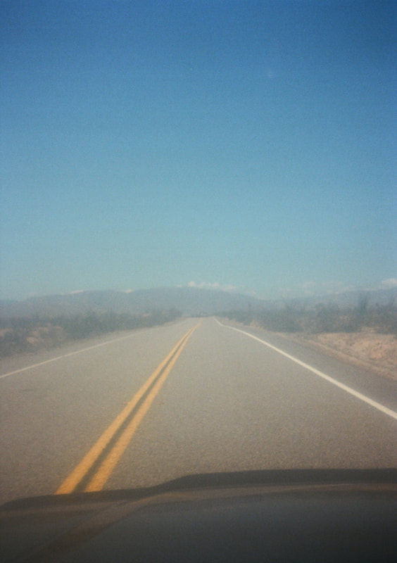
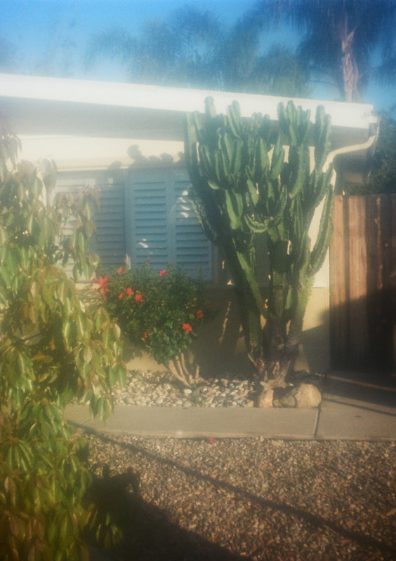
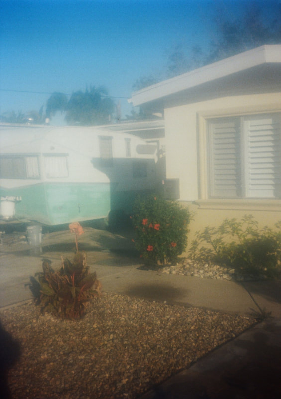
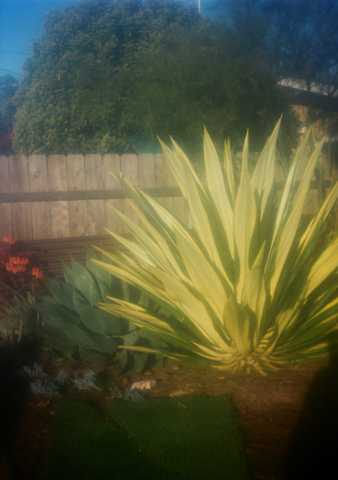
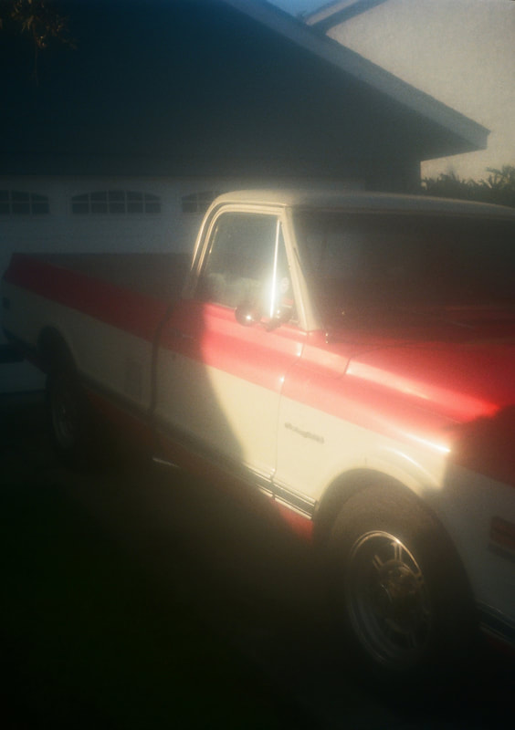
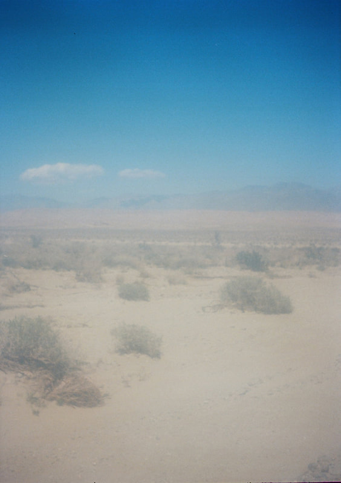

One of the best-looking half frame cameras I have ever laid eyes on. A beautiful gunmetal paperweight. And somehow the images it made are gorgeous anyway.

I had wanted this camera for a long time. I have always been a big fan of Minolta optics and this camera checked a lot of boxes... hybrid auto/manual exposure via a needle system, range focus, options for manual override, and a selenium meter that needs no batteries. These are usually found on eBay fairly easily but are on the pricier side, usually shipping from Japan. I crossed my fingers and clicked Buy It Now.
Straight away, this is one of the best-looking half frame cameras I have ever laid eyes on. Mine came in a dark gunmetal grey. A cursory inspection showed the meter working, the shutter speed adjusting, and apertures working correctly. The lens seemed clear and scratch free. The light seals looked a bit shoddy, but I loaded a roll of Portra 160 and went to work.
In use, this camera is a bit more complicated than a pure point and shoot like the Pen EE but definitely easier than something like a Pen F. Focus is range-based with 3 presets. Exposure is set with a match needle system. Just line up the needle in the green rectangle and go. In the field this camera quickly became an extension of me. The viewfinder is bright and clear. It may be my new favorite half frame...
Long exhale. The photos were foggy and hazy... barely usable unless I was trying to emulate a dream sequence from a soap opera. Exposure seemed fine and the film was stable, but the images were ruined by a fogged inner element I had not detected on inspection. I tried to clean it off with a microfiber and then a kim wipe. No luck.
And yet (looking at these images now) there is something undeniably beautiful about the haze. The desert at Anza-Borrego, the open road stretching into nowhere, the old truck bathed in blown-out California afternoon light. The fogged optic turned every frame into something dreamlike. Not what I set out to make. But not nothing either.
As an eBay Partner, I may earn a commission from qualifying purchases.





All images shot on Kodak Portra 160 · Fogged inner lens element · Unintentional haze · Accidental beauty